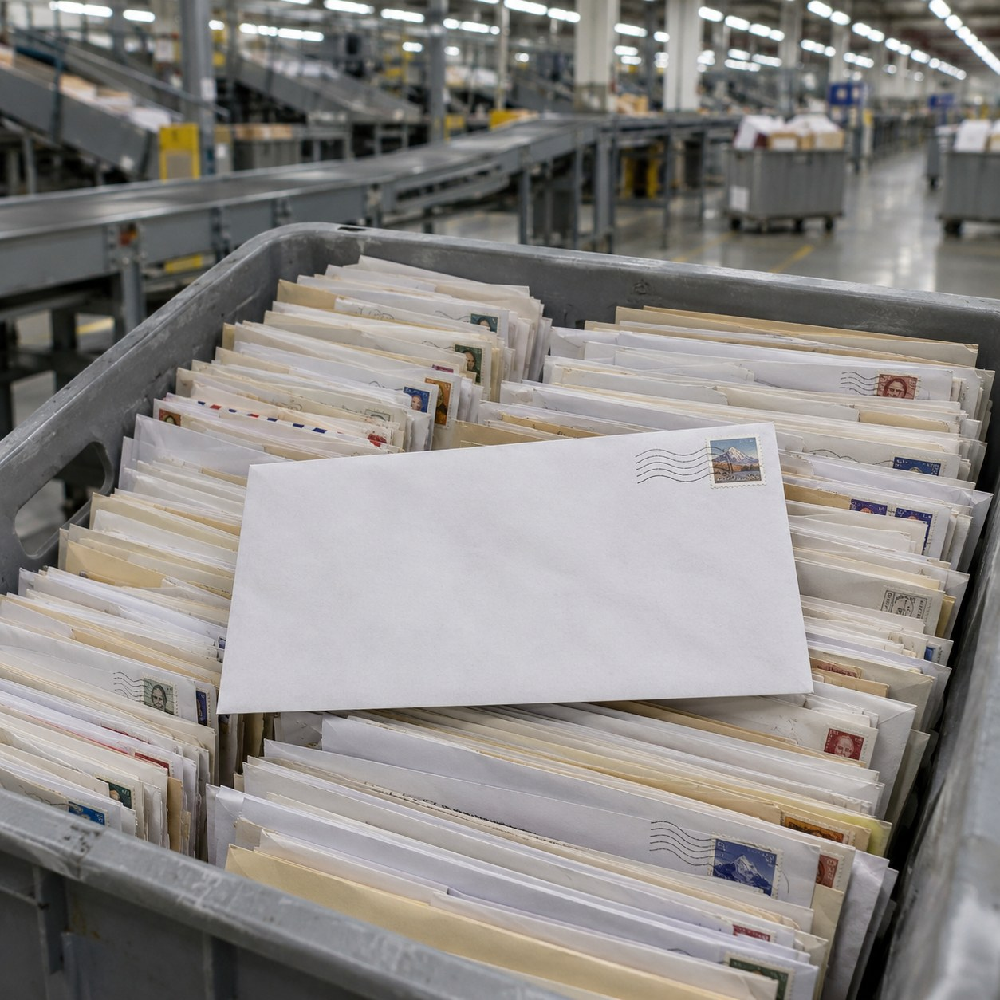
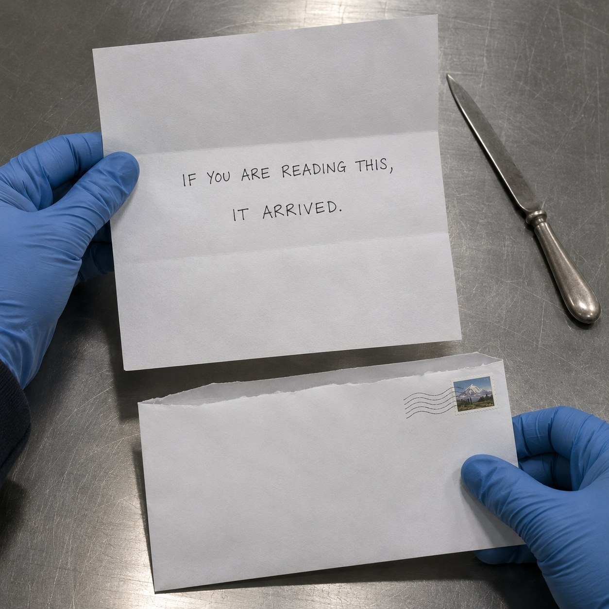

Lost on Purpose


An envelope with a stamp on it and nothing else. No name, no street, no return address. It went into a post box like any other letter, and the post took it in like any other letter.
A letter like this cannot be delivered. That is the whole of it. Every machine and every hand that sorts it fails to send it anywhere, and each failure moves it one step on. In the end it reaches the one room where the post keeps what it could not deliver. There, and only there, someone is allowed to open a letter that is not theirs.
So the letter does have an address. It is written in what is missing. The only way to reach that room, and the person who works in it, is to be lost.
Inside is one sheet. IF YOU ARE READING THIS, IT ARRIVED.
Cildo Meireles printed questions on returnable glass bottles and let them go back into circulation, so a system built to carry one thing carried another without noticing. This letter rides a system too, but it hides nothing. It goes the whole way by being wrong at every step.
Most letters are written for one person and opened by that person. The clerk in that room opens thousands written for someone else. This is the one written for them. No one could have put their name on it. Leaving it blank was the only way to be sure it got there.